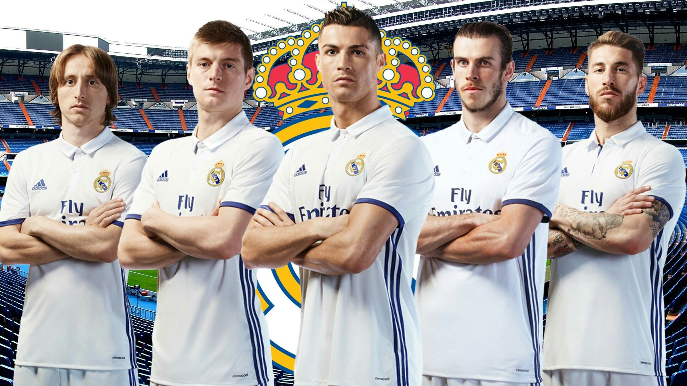
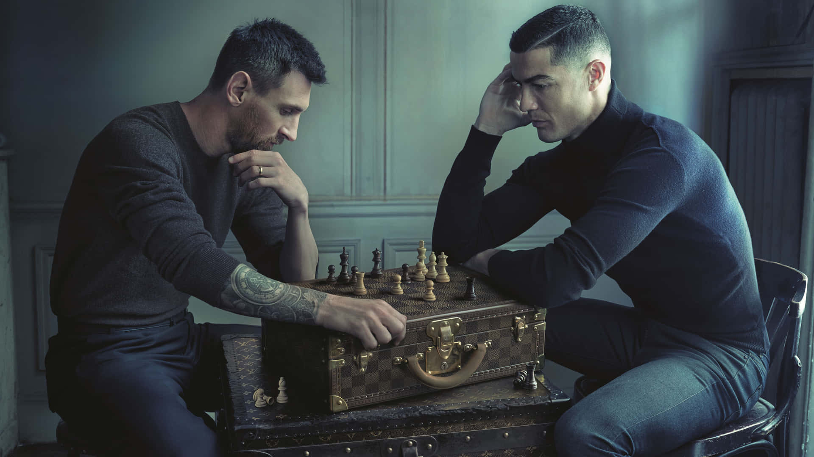
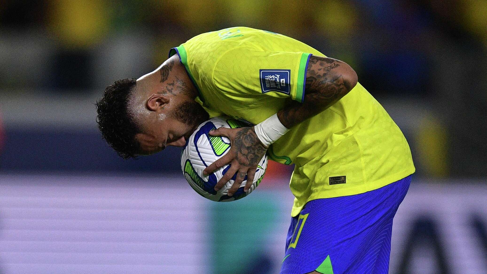

Криштиану Роналду — один из лучших футбольных игроков современности. Он родился в Португалии и начал свою профессиональную карьеру в «Спортинге». За свою карьеру он выступал за такие клубы, как «Манчестер Юнайтед», «Реал Мадрид», «Ювентус» и «Манчестер Юнайтед» снова. Роналду отличает выдающаяся техника, скорость и способность забивать голы в самых сложных ситуациях. Он является обладателем множества наград и рекордов, подтверждающих его статус одного из величайших футболистов всех времен.
Больше информацииНеймар — талантливый бразильский футболист, известный своей техникой и креативностью. Он начал профессиональную карьеру в «Сантосе», где проявил свои яркие способности. Позже он играл за такие клубы, как «Барселона» и «Пари Сен Жермен», завоевав множество трофеев. Неймар славится своим дриблингом, скоростью и умением создавать голевые моменты. Он считается одним из лучших игроков своего поколения и важной фигурой в мировом футболе.
Больше информацииЛионель Месси — один из величайших футболистов в истории. Он родился в Аргентине и начал свою карьеру в клубе «Барселона», где стал знаменитым благодаря своей технике и игровой мудрости. За свою карьеру он выиграл множество трофеев, включая Лигу чемпионов и чемпионаты Испании. Месси известен своей невероятной дриблингом, видением поля и способностью создавать голевые моменты. Он считается одним из самых талантливых и вдохновляющих игроков современности.
Больше информации